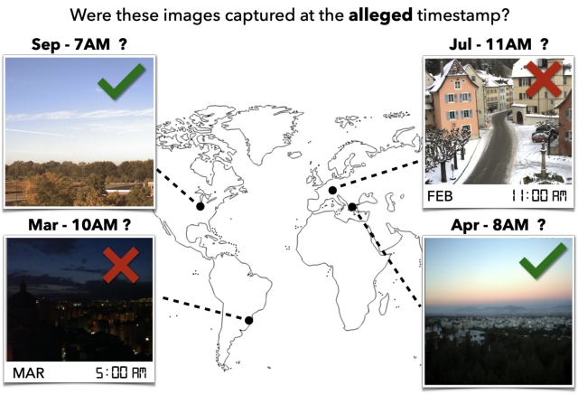
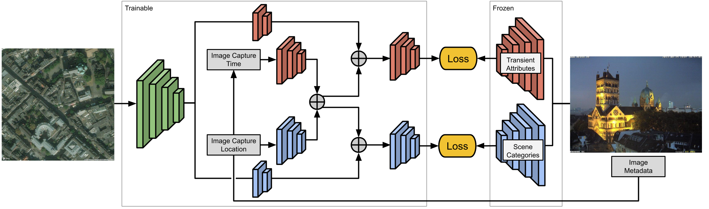

About Me
I am a Clinical Associate Professor in the School of Applied and Creative Computing at Purdue University. I earned my Ph.D. in Computer Science from the University of Kentucky under the direction of Dr. Nathan Jacobs, and my master's degree from IUPUI as a Fulbright Scholar.
My research spans computer vision, machine learning and artificial intelligence, and computing education. I develop computational methods for understanding visual and multimodal data and design AI-enabled educational tools that support programming instruction and student learning.
Research at a Glance
Explore all research →
Computer Vision & Multimodal AI
Food computing, vision-language models, medical imaging, and visual understanding across real-world applications.
Learn more →
Geospatial & Remote Sensing AI
Integrating visual, geographic, temporal, and acoustic information to understand and monitor our environment.
Learn more →if n > 0:
print("Positive")
else:
print("Non-positive")
Computing Education & AI
Interactive programming environments, AI-enabled learning tools, and evidence-based innovations in computing education.
Learn more →Recent News
View publications →- 2026Published Food Type and State Recognition with VLMs Using Different Prompting Strategies at the CVPR MetaFood Workshop.
- Aug. 2026Awarded an NSF IUSE grant to develop an interactive flowchart-to-code learning environment for introductory programming.
- 2026Published LoRA-SAM for chest X-ray segmentation in Diagnostics.
- 2026ChartCode: A Flowchart-Centric Programming Platform published at SIGCSE TS 2026.
- 2026Served on the organizing committee for the MetaFood Workshop at CVPR 2026 and presented our food computing research.
- 2025Presented Food Type Recognition Using Vision Language Models at the CVPR MetaFood Workshop.